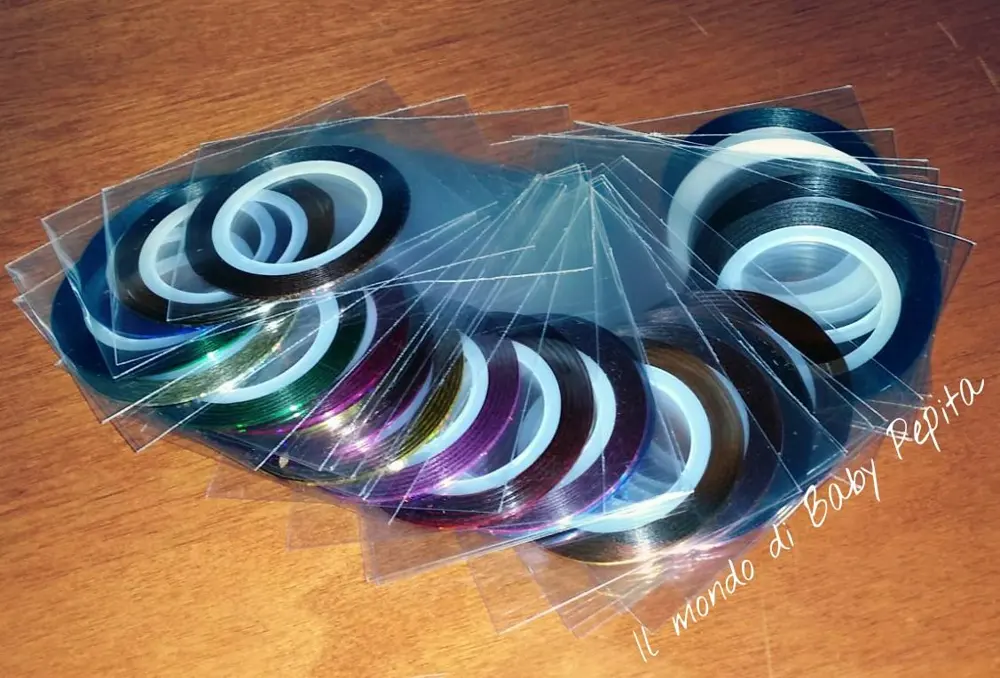
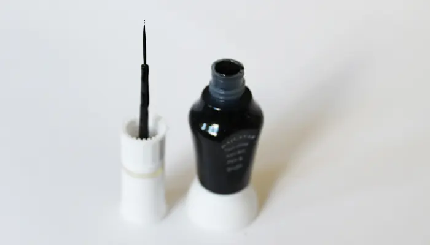
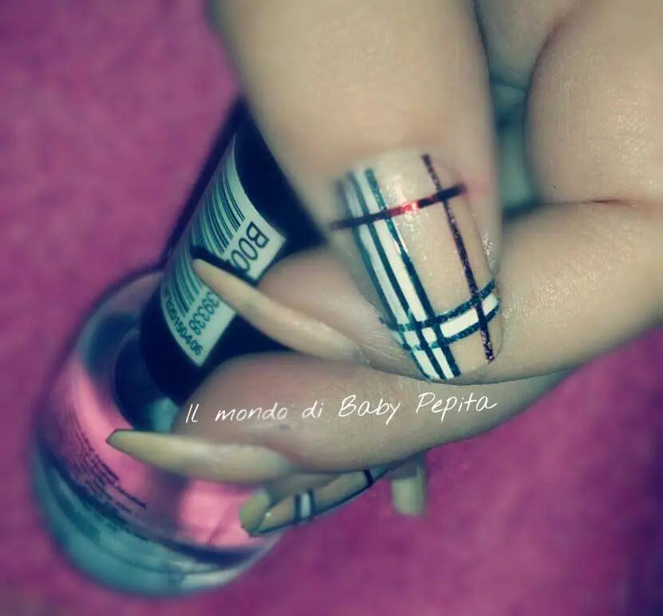
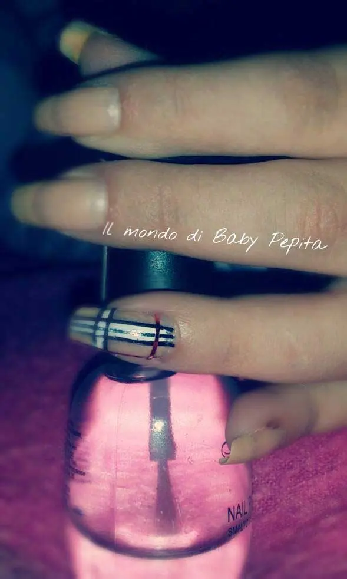
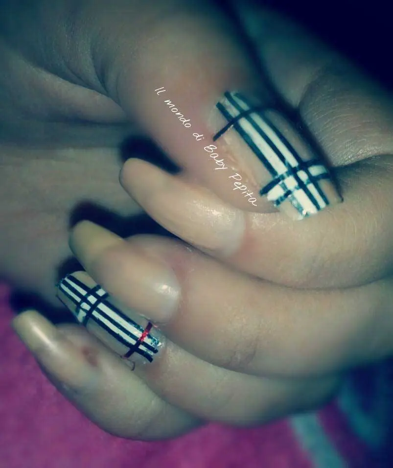
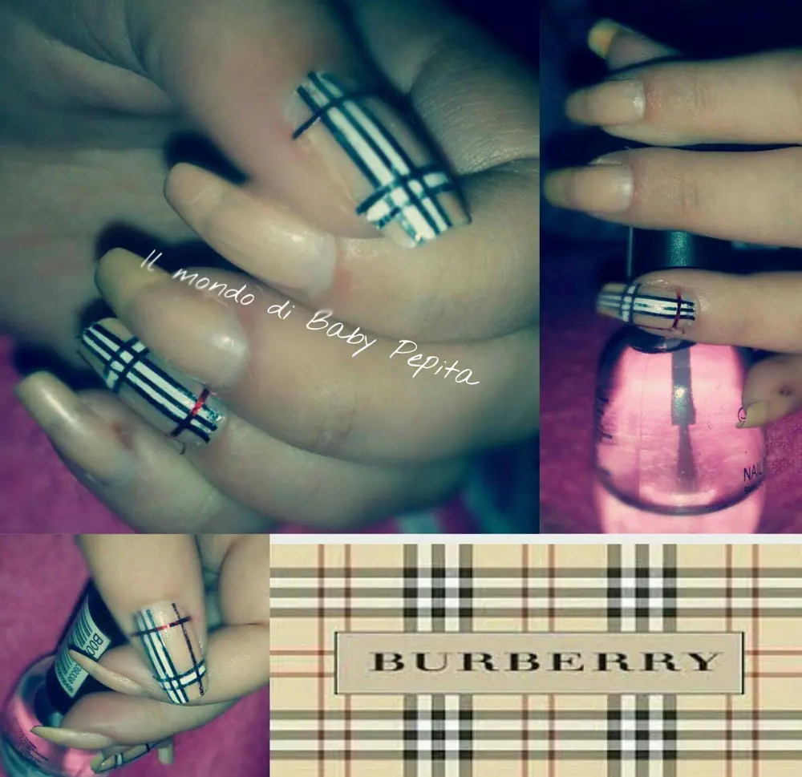

BURBERRY NAIL ART - marzo 2016
OK! vi ho fatto vedere sulla pagina qualche settimana fa del nuovo acquisto fatto su wish ossia dei nastrini per le nail art. .

Così tanto curiosa, ho voluto provare subito se il prezzo valesse la spesa. .E in effetti anche se costano poco più di 1,00 € io mi sono trovata bene davvero. .Vi lascio il link di wish per comperarle. .
https://www.wish.com/search/nail%20art?th_s=1#cid=558bd57ebbdbcf4003223e84
(questo è il link per prendere ben 30 nastrini di colore diverso a soli 1,00€). .Ho voluto ricreare così, il disegno, la fantasia del brand BURBERRY. .una nota marca di lusso britannica che realizza vestiti, accessori e cosmetici.
Ho utilizzato per questa nail art:
- base trasparente
- smalto color carne (al momento mi sfugge il numero del colore)
- smalto bianco con il pennellino sottile
- nastrini nero e rosso
- top coat

Lo smalto bianco dal pennellino sottile è come questo nero, con questo pennello apposta per nail art .
Ho steso ovviamente la base trasparente;poi dopodiché ho passato lo smalto color carne su tutte le ditae solo sul pollice e sull'anulare ho lavorato con i nastrini. .
Prima passando lo smalto bianco con la punta sottile e poi sistemando i nastrini neri ed infine quelli rossi . .

Sono ancor ben lontana dall'essere perfetta, ne sono consapevole, ma sono molto contenta del risultato. .

Fantasia che trovo molto elegante!

Ora attendo però un vostro parere, come vi pare questa nail art? è degna di essere paragonata ad una nail art Burberry? ahahahah